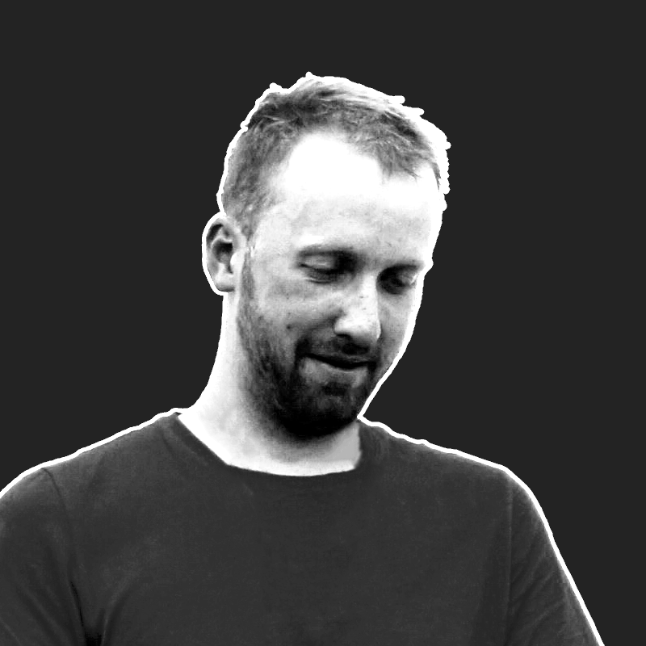

Currently open to new projects
Alex Hladkyi · Digital Product Designer
Hi, I'm Alex. I am a digital product designer with close to a decade of experience creating mobile, desktop and web interfaces. I also love creating bespoke app icons and icon sets.
Currently open to new projects
hello@alexhladkyi.com or book a call
Alex Hladkyi
Product Designer / UX + UI + Interaction
Based in Lviv, Ukraine 
Book a call Email me Linkedin Telegram
© 2023